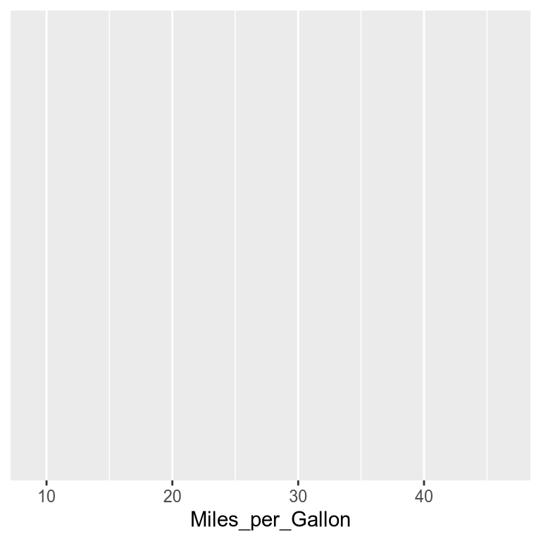
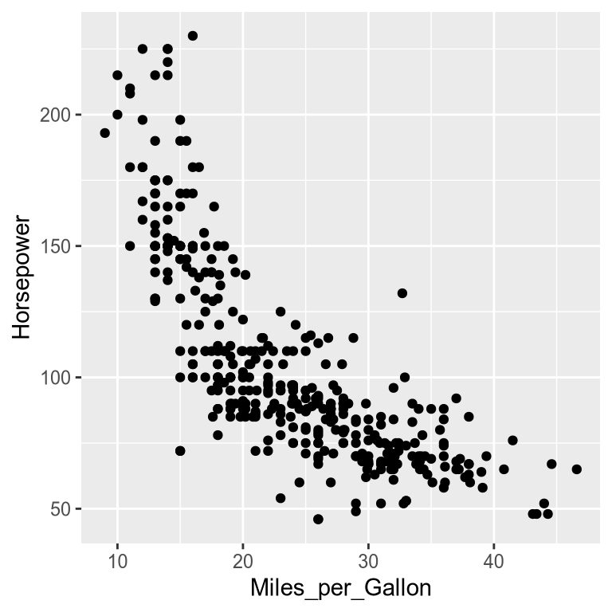
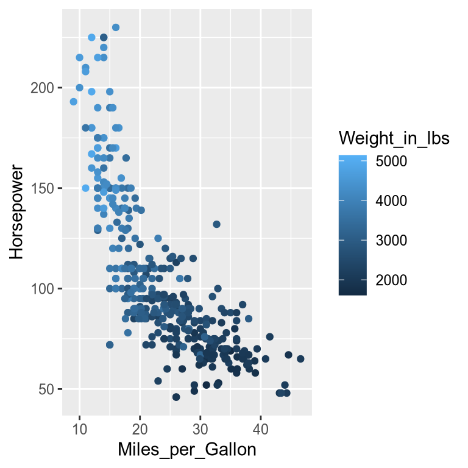
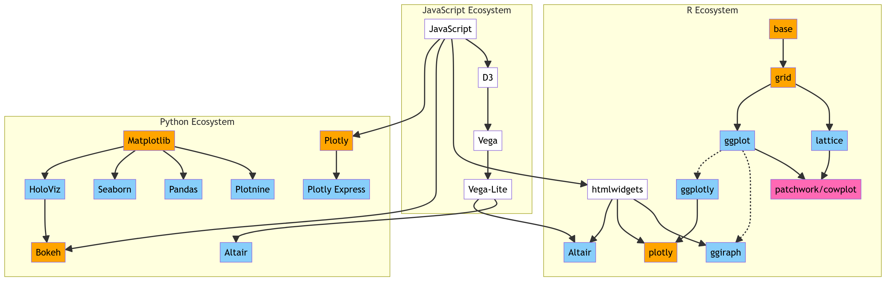
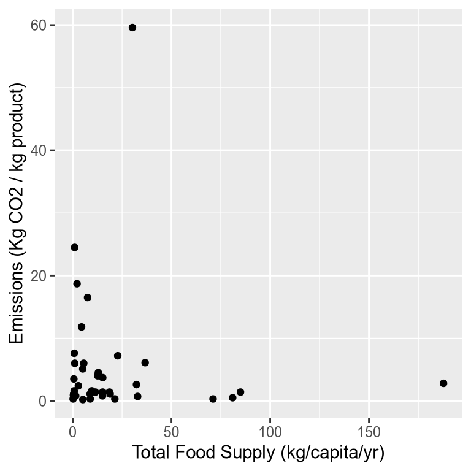

The rusty doors of your spaceship creak open. Through blurry eyes, you see metal spires curving up into a green sky. You’ve landed in the colony of Viridia.
Strange faces gather around you, their eyes wide with disbelief. The whispers spread: “How could an Earthling get here?” But Earth is gone—its demise a stark warning to civilizations across the galaxy.
And you? You are its last messenger.
What happened in the final days of Earth? Why did it spiral out of control?
In the coming chapters of your life, you will help the Viridians answer these questions, to visualize the history of your home planet. And maybe, together you can prevent them from meeting the same fate.
A Journey Through Data
This book uses visualization to explore the forces that shape society—health, economy, environment, and culture. Through visualization, we will map these forces, reveal their connections, and discover insights to build a better future.
Learning outcomes
Explain that the main advantage of visualizing data instead of presenting it with numbers is that they are easier to interpret for humans.
Understand that the advantage of using a high level level visualization syntax is that it allows us to think in terms of the data, rather than focusing on graphical details.
Understand that a grammar of graphics defines grammatical rules that can be used to construct entire visualizations from smaller building blocks, such as geometric marks and aesthetic encodings.
Apply the visualization grammars in Altair and ggplot to create a basic chart via alt.Chart().mark_point().encode(x='...', y='...', color='...') and ggplot() + aes(x=..., y=..., color=...) + geom_point()
1.2 What is data visualization?
At its core, data visualization is about representing numbers with graphical elements such as the position of a point, the length of a bar, or the color of a line.
1.3 What is the purpose of visualizing data?
We can use visualizations both to improve own understanding of data and to effectively communicate our data insights to others. While we often use visualization to help us answer a specific question we have about our dataset, it can also help us generate new questions.
1.4 Why bother visualizing data instead of showing raw numbers?
To understand why visualizations are so powerful, it is helpful to remember that to answer a question, we often have to put the data in a format that is easy for us humans to interpret. Because our number systems have only been around for about 5,000 years, we need to assert effort and train ourselves to recognize structure in numerical data.
Visual systems, on the other hand, have undergone refinement during 500,000,000 years of evolution, so we can instinctively recognize visual patterns and accurately estimate visual properties such as colors and distances.
Practically, this means that we can arrive at correct conclusions faster from studying visual rather than numerical representations of the same data. For example, have a look at the four sets of numbers in the table on the slide. Can you see the differences in the general trends between these four sets of numbers? This is a slightly modified version of the original, which was put together by statistician Francis Anscombe in the 70s.
A
X
Y
10.00
8.04
8.00
6.95
13.00
7.58
9.00
8.81
11.00
8.33
14.00
9.96
6.00
7.24
4.00
4.26
12.00
10.84
7.00
4.81
5.00
5.68
B
X
Y
10.00
9.14
8.00
8.14
13.00
8.74
9.00
8.77
11.00
9.26
14.00
8.10
6.00
6.13
4.00
3.10
12.00
9.13
7.00
7.26
5.00
4.74
C
X
Y
10.00
7.46
8.00
6.77
13.00
8.50
9.00
7.11
11.00
7.81
14.00
8.84
6.00
6.08
4.00
5.39
12.00
8.15
7.00
6.42
5.00
5.73
D
X
Y
8.00
6.58
8.00
5.76
8.00
7.71
8.00
8.84
8.00
8.47
8.00
7.04
8.00
5.25
19.00
12.50
8.00
5.56
8.00
7.91
8.00
6.89
Summary statistics don’t tell the whole story
You are likely not able to see much difference between the data sets in the table above. What about if I showed you a few commonly used numerical summaries of the data?
A
X
Y
9.00
7.50
3.32
2.03
B
X
Y
9.00
7.50
3.32
2.03
C
X
Y
9.00
7.11
3.32
1.15
D
X
Y
9.00
7.50
3.32
2.03
Summaries, such as the mean and standard deviation, are helpful statistical tools that are often useful for detecting the differences between datasets. However, since they collapse the data into just a few numbers, statistical summaries can’t tell the whole story about the data and there can be important differences between datasets that summaries fail to reveal.
Above, the mean and standard deviation indicate that set C is slightly different from the other sets of data in terms of the centre of the sample distribution and the spread of that distribution, while the remaining three sets of data have a similar centre and spread.
Plotting the data immediately reveals patterns in the data
So if you can’t really see any patterns in the data and the statistical summaries are the same, that must mean that the four sets are pretty similar, right? Sounds about right to me so let’s go ahead and plot them to have a quick look and…
… what… how can they be so different… there must be something wrong, right? Well what is wrong is that humans are not good at detecting patterns in raw numbers, and we don’t have good intuition about which combination of numbers can contribute to the same statistical summaries. But guess what we excel at? Detecting visual patterns!
It is immediately clear to us how these sets of numbers differ once they are shown as graphical objects instead of textual objects. We could not detect these patterns from only looking at the raw numbers or summary statistics This is one of the main reasons why data visualization is such a powerful tool for data exploration and communication.
In our example above, we would come to widely different conclusions about the behavior of the data for the four different data sets. Sets A and C are roughly linearly increasing at similar rates, whereas set B reaches a plateau and starts to drop, and set D has a constant X-value for all numbers except one big outlier.
A modern take on Anscombe’s quartet
For a more recent and dynamic illustration of how graphical representations are much easier for us to interpret, check out the Datasaurus Dozen animation below. It displays several different datasets, all with the same mean, standard deviation and correlation between X and Y, but looking at the data graphically shows us how different these datasets actually are.
The Datasaurus Dozen: Datasets with identical summary statistics but very different distributions.
Now that we have experienced the benefits of visualizing data, let’s figure out how to create such visualizations!
1.5 Which visualization library should we pick?
There is a lot we can learn about visualization without using coding, but in order to make this learning experience interactive, we will create charts programmatically as we learn about new visualization concepts.
In order to do so, we will start by selecting which visualization library to use. To make an informed decision, it is helpful to understand that most visualization libraries can be classified as taking either a high level declarative approach or a low level imperative approach to creating visualization.
Exercise 1
To understand the difference between these two approaches, let’s start with an example, using the following small toy data set:
x
y
group
0
0.2
0.6
a
1
0.6
0.9
a
2
1.2
1.8
b
3
2.4
2.7
b
A helpful way to illustrate the difference between the two syntax approaches is to imagine that we want to create a chart where we color the points according to their group. Here is pseudocode1 that illustrates this difference:
Although the same chart is created from both these pseudocode examples, the syntax looks widely different. Before clicking on the hint and solution below to read our explanation of the two approaches, pause here and try to describe the differences between the two in your own words2.
Hint
Does one of the approaches focus more on the data and the other more on the plot-specific details?
Solution
Based on the syntax of the exercise above, we can say that a declarative approach to visualization let’s us express ourselves in terms of the data (color='group') whereas an imperative approach to visualization focuses more explicitly on plot construction details such as defining colors explicitly and then assigning them to groups by looping through the data.
A related way to understand declarative vs imperative approaches is to consider the difference between giving an instruction in each:
Focus: Declaring links between data variables (e.g., group) and graphical properties (e.g. color). The rest of the plot details (such as which colors to use) are handled automatically.
“Loop over the dataframe and plot any observations of group A in blue and any observations of group B in yellow.”
Focus: Being explicit with all the details for creating the chart via for-loops and low-level drawing commands.
In this book we will learn about declarative visualization tools, since these allow us to code a high-level specification of what we want the visualization to include, rather than coding out the details of how to implement the visualization. Another way to state this would be that high level libraries focus on data and relationships, whereas low level libraries focus on plot construction details.
Among declarative visualization libraries, there are still a few different approaches to how visualization is created. Here, we are going to learn about libraries that implement a so called “grammar of graphics”.
1.6 What is a grammar of graphics?
A graphical grammar is a system for creating visualizations by combining basic elements according to specific rules. It parallels the grammars of natural and programming languages, but applies to visual components.
We are all familiar with the grammatical rules for natural languages3, where they tell us how to combine words into sentences to convey particular meanings. Programming languages also have a grammatical structure, let’s see how they work in the following exercise:
Exercise 2
What do you think the output would be of the following Python code?
1+2
As you might have expected, the output is 3 because Python uses the conventional rules of mathematics to add the two numbers together. Almost all programming languages follow this rule. But what does the +-operator do if we are trying to add something other than numbers. What do you think the output would be of the following code? Do you think it differs between programming languages?
'one'+'two'
Hint
Just like that addition of numbers contain all counts of the individual numbers, maybe the addition of two strings would contain all the characters from both the strings?
Solution
The grammar of Python defines that the +-operator should perform concatenation when strings are added together, so the returned result would be "onetwo". In contrast, the grammar of R says that there is no such thing as addition of strings, so it would throw an error complaining that non-numeric arguments were passed to the +-operator.
As with the grammar of programming languages, visualization packages make different choices for what happens when different visual elements are added together. Key components of a graphical grammar often include:
Canvas: The background or base of the chart.
Geometric marks: Visual elements representing data (e.g. points, bars).
Visual encoding: Rules for mapping data to visual properties (e.g. the column 'group' to color).
In the next session, we will see how these components can be added together using code.
The following table illustrates the similarities between the grammars of programming, natural language and graphics:
Component
Natural Language
Programming Language
Graphical Grammar
Basic Units
Words
Variables, literals
Marks (points, lines, bars)
Syntax Rules
Word order, punctuation
Syntax rules, operators
Rules for combining marks, layers, aesthetics
Semantics
Word meanings, context
Expression meanings
Meanings of visual encodings
Composition
Sentences, paragraphs
Statements, code blocks
Layers, facets
Output
Text
Executable code
Data visualizations
Modifiers
Adjectives, adverbs
Attributes, parameters
Scales, legends, annotations
Understanding these parallels enables users to approach data visualization systematically, leveraging a defined set of components and rules.
1.7 Learning to speak with a grammar of graphics
To start creating our own charts, we will work with two libraries that implement a grammar of graphics: Altair in Python, and ggplot in R. These two libraries both offer a powerful and concise visualization grammar for quickly building a wide range of statistical charts.
What do these grammars look like? In brief, we first create a canvas/chart, then encode our data variables as different channels in this chart (x, y, color, etc) and add geometric marks to represent the data (points, lines, etc). You can see an illustration of this in the image below, together with how ggplot (top) and Altair (bottom) implements the grammatical components in their respective syntax. The exact syntax is slightly different, but the overall structure very much the same.
As a result of the predictable structure, a grammar of graphics allows you to create an impressive range of visualizations from simple to sophisticated. A graphical grammar also makes it notably easier to change between different types of plots, as the code syntax follows a predictable structure and only parts of the grammar changes between charts. In fact, Altair and ggplot have been show to be two of the libraries that require the least amount of changes in the code between different types of visualizations.
Let’s get coding!
Data in Altair and ggplot is built around “tidy” dataframes, which consists of a set of named data columns (also referred to as variables or fields) with one feature each and rows with one observation each. Here, we will load in a small dataset relating to cars containing historical trends in automotive design, performance, and efficiency.
Stellar charts
Altair is the name of a star in the same constellation as the star Vega, which is also the name of the Javascript library that Altair is built upon.
Grammatically correct
The “gg” in ggplot is a reference to the book “Grammar of Graphics”, which inspired the creation of the ggplot library.
The fundamental object in Altair is the Chart, which takes a data frame as a single argument alt.Chart(cars). With a chart object in hand, we can now specify how we would like the data to be visualized. We first indicate what kind of geometric mark we want to use to represent the data. We can set the mark attribute of the chart object using any the Chart.mark_* methods. For example, we can show the data as points using mark_point():
alt.Chart(cars).mark_point()
Although it looks like there is only one point in the chart, there is actually one point per row in the dataset, all plotted on top of each other. To visually separate the points, we can map various encoding channels, (or just encodings or channels for short), to columns in the dataset. For example, we could encode the column Miles_per_Gallon (how many miles a car can travel on each gallon of fuel) of the data using the x channel, which represents the x-axis position of the points. To specify this, we use the encode method:
For all Altair charts, you can see that there is a button with three dots to the top right. If you click this you will have options to save the chart and to open the underlying Vega-Lite code. We will see how to save charts programmatically in a later chapter.
In ggplot2, we begin by creating a canvas linked with our dataset with ggplot(cars) and encode the aesthetics of the chart with the aes() function, which maps a column in the data frame to a dimension in the chart.
ggplot(cars) +aes(x = Miles_per_Gallon)

To visualize the data, we need to tell ggplot which geometric mark to use for representing the data. Let’s use points via the geom_point() function. You don’t see any output here because geom_point() requires both an x and y aesthetic; we will see how to add these in the next code block (in fact this expression would raise an error if evaluated, so here we just show the code).
Note that instead of ggplot() + aes() you will often see ggplot(aes()). These are functionally the same, but putting aes() outside ggplot() gives some additional flexibility as we will see later.
To quote or not to quote
As you can see, in Altair you need to use quotes to refer to the column names while in ggplot you don’t. Why is that? This is because Python is a stricter language than R, and requires that packages follow its fundamental rules and we can’t reference a column as an unquoted variable name. In R, a package is more free to redefine the rules and essentially create a domain specific syntax for its purpose. This has both pros and cons: it is convenient to not have to type the quotes and to get tab completion for column names, but it is inconvenient to write functions and program with these constructs as detailed in the dplyr documentation.
Though we’ve now separated the data by one attribute, we still have multiple points overlapping within each category. Let’s further separate these by spreading the data out over the y-axis. With the addition of a second dimension in our chart, we’re ready to ask our first question about the data. Let’s say we’re interested in how a car’s fuel efficiency is related to its engine power. To answer this question, we would want to explore the relationship between the columns Miles_per_Gallon and Horsepower (how powerful the engine is), which we can do by assigning them to the x and y dimension, respectively.
Warning: Removed 14 rows containing missing values or values outside the scale range
(`geom_point()`).

Styling differences
The default style is quite different between the libraries. Both have advantages, and they are easy to customize to look however you want, which we will also get into later. It’s worth noting that ggplot does not including the origin of the plot (x=0, y=0) by default, but Altair does in many cases. Both these defaults are sensible in different context, which we will learn more about in later chapters.
You can also see that ggplot will print a warning when there are some observations that can be plotted due to missing values in one of the two columns. Altair also avoids plotting these observations, but is less verbose and does not print a warning.
Finally, note that = for parameter assignment is surrounded by spaces in R but not in Python.
This type of chart is often called a “scatter plot”. Characteristic for a scatter plot is that there is one graphical element (often a point) per observations in the data and one column each on the x and y axis. We will learn more about for which purposes it is effective later in the book.
Exercise 3
Study the chart above, what can you say about the relationship between Horsepower and Miles_per_Gallon? If you choose to use statistical terms such as talking about the correlation between the two variables, try to express yourself in common English as if you were explaining what the chart means to someone of the general public. Finally, it’s always good to ask yourself if your interpretation of the chart makes sense, given your knowledge about how the world works.
Hint
It can be helpful to start with a particular area of the chart. For example, look at the cars with the most powerful engines (highest horsepower), what is their fuel efficiency? Now do the same for the cars with the least powerful engines and compare the two.
Solution
From the chart, we can see that Horsepower and Miles_per_Gallon are “negatively correlated”. In plain English, this means that cars with more powerful engines (higher Horsepower), have lower fuel efficiency (lower Miles_per_Gallon). This makes sense as more powerful engines often consume more gas than less powerful ones. Note that we can’t make claims about a causal relationship from the chart alone, but in this case the observed relationship in the chart supports our mechanistic understanding of the world.
Our conclusion above makes sense for the data we showed in chart. But remember that there are other variables in our dataframe, let’s show it again as a reminder.
Name
Miles_per_Gallon
Cylinders
Displacement
Horsepower
Weight_in_lbs
Acceleration
Year
Origin
0
chevrolet chevelle malibu
18.0
Eight
307.0
130.0
3504
12.0
1970-01-01
USA
1
buick skylark 320
15.0
Eight
350.0
165.0
3693
11.5
1970-01-01
USA
2
plymouth satellite
18.0
Eight
318.0
150.0
3436
11.0
1970-01-01
USA
...
...
...
...
...
...
...
...
...
...
396
dodge rampage
32.0
Four
135.0
84.0
2295
11.6
1982-01-01
USA
397
ford ranger
28.0
Four
120.0
79.0
2625
18.6
1982-01-01
USA
398
chevy s-10
31.0
Four
119.0
82.0
2720
19.4
1982-01-01
USA
399 rows × 9 columns
What if one of the other columns also influence a car’s fuel efficiency? For example, it seems likely that the weight of the car impacts fuel efficiency, since more force is needed to propel a larger mass. To explore this variable, we can add more dimensions to this chart, e.g. specifying which column we want to color the points by.
When using the color encoding channel, Altair will automatically figure out an appropriate color scale to use. The Weight_in_lbs column contains continuous numerical data so a continuous gradient will be used for the color scale. The largest value in the Weight_in_lbs column is represented with a dark color since this has the highest contrast to the light background of the chart.
When using the color encoding channel, ggplot will automatically figure out which color scale to use. The Weight_in_lbs column contains continuous numerical data so a continuous gradient will be used for the color scale. The largest value in the Weight_in_lbs column is represented with a light color since this has the highest contrast to the dark background of the chart.
Warning: Removed 14 rows containing missing values or values outside the scale range
(`geom_point()`).

Making space
Notice the difference in how the legend is added in the two libraries. In Altair the overall width of the figure was increased to keep the dimensions of the chart area the same, whereas in ggplot the width of the figure is kept constant so the chart area must narrow to accommodate the legend. In general, we don’t want the chart area to shrink just because we are adding a legend, so here we would need to manually increase the width of the ggplot chart, which we will learn about in a future chapter.
Exercise 4
How does a car’s weight relate to its fuel efficiency?
Hint
As with the previous exercise, you can try to start with a specific area of the chart, first focusing on finding the fuel efficiency of the cars with the highest horsepower, and then compare it to the cars with the lowest horsepower.
Solution
We can see that weight is correlated positively with Horsepower and negatively with Miles_per_Gallon. This aligns with our knowledge about the world: heavy cars require bigger engines and more fuel to propel them forward. However, remember that we can’t say anything about causation from the chart alone, we can just note the correlation and that is what we would expect based on our knowledge about physics of moving objects.
1.8 Deep dive
Click to expand this optional content or proceed to the next section
The R and Python visualization ecosystems
There are a wide variety of high-level and low-level tools for visualizing data in R and Python. While we have already outline the advantages of the libraries we chose, it can be helpful to be aware of which others are available since you are likely to encounter some of them in the wild. In this diagram you can see an overview of how which other libraries exist and how they are connected.

As a reward for checking out the deep dive, enjoy this genAI composition of the visualization landscapes in R and Python.
🎵
Data Viz Ecosystem
Generated with artificial intelligence
1.9 Exercise mission
With a commitment to sustainability and a vision for a greener future, Viridia is taking proactive steps to investigate and mitigate its environmental impact. One significant area of focus is the emissions associated with food consumption and production. Minister Reed, head of the environment department, has called on you to step up to help and tasked with investigating emissions in the city of Viridia.
Ministry of Environment
Minister Reed
PositionHead of Environment
DepartmentUrban Food Systems
ID NumberEI-2024-0042
ClearanceLevel 5
Exercise 5
To start with your investigation, you’ll need to visualize the emissions data effectively. This will help unlock insights crucial for the Ministry of Environment. The data looks like this:
Food Item
Total Food Supply (kg/capita/yr)
Emissions (Kg CO2 / kg product)
0
Apples
21.33
0.3
1
Bananas
15.11
0.8
2
Barley (Beer)
0.46
1.1
...
...
...
...
34
Tomatoes
18.60
1.4
35
Wheat & Rye (Bread)
84.96
1.4
36
Wine
11.45
1.4
37 rows × 3 columns
Before you dive into coding, Minister Reed wants to ensure that you have understood your task…
import {createChatInterface} from"./chat.js"{const instructions ="You are Minister Reed of the city of Viridia, a sharp-witted, impatient but supportive environmental minister. Your colleague has been tasked with creating an Emissions Report. Guide them toward understanding why a complete picture is necessary and why including the Total Food Supply (kg/capita/yr) column matters (alongside the Emissions Kg CO2 / kg product). Once you get a satisfactory answer, end the conversation immediately and ask them to proceed to the next task. You are in a phone text convo.";const first_message ="I need your Emissions Report on my desk by 2 pm. Remind me why you are including the Total Food Supply in your analysis?";const chatInterface =createChatInterface({ apiUrl,instructions: instructions,firstMessage: first_message,bossImage:'img/environ_minister.jpg',bossName:'Minister Reed',});returnhtml`${chatInterface}`;}
Exercise 6
It’s time to put the Grammar of Graphics to good use. Create a scatter plot of the food supply and emissions data by following these steps:
Instantiate the chart from the food_emission dataframe
Use the point mark to create a point for each observation in the data.
Encode Total Food Supply (kg/capita/yr) in the x channel and Emissions (Kg CO2 / kg product) in the y channel.
You can use the code cells below to code your answer:
alt.Chart(food_emission).mark_point().encode( x='Total Food Supply (kg/capita/yr)', y='Emissions (Kg CO2 / kg product)',)
ggplot(food_emission) +aes(x=`Total Food Supply (kg/capita/yr)`,y=`Emissions (Kg CO2 / kg product)`, ) +geom_point()

Exercise 7
These are striking results! There are some clear clusters and outliers in the data.
With altair you can add a tooltip to your chart. Tooltips are labels that pop up when you hover over a datapoint. You can choose which variable is shown in your tooltip just as you have been using x, y, and color.
Add a tooltip to investigate which foods stand out.
Hint
Take a closer look at the emissions data table - you’ll need the correct column name for the tooltip.
Solution
alt.Chart(food_emission).mark_point().encode( x='Total Food Supply (kg/capita/yr)', y='Emissions (Kg CO2 / kg product)', tooltip='Food Item',)
Exercise 8
{const instructions ="You are Minister Reed of the city of Viridia, a sharp-witted, impatient but supportive environmental minister. You are discussing a recent Emissions Report with your colleague. The report reveals surprising findings: beef has an exceptionally high emissions rate (around 60 Kg CO2/kg product) compared to other foods, and its supply is also high. Milk has a high supply (190 kg/capita/yr) but moderate emissions. Many vegetables have very low emissions. You see great potential in reducing beef consumption in Viridia to combat climate change. Guide your colleague to this conclusion. Do not give the solution in the first message; lead your colleague to the answer over the course of three messages. Once they reach the correct conclusion, end the conversation.";const first_message ="I've been reviewing the emissions data. What did you notice about the patterns in our food emissions?";const chatInterface =createChatInterface({ apiUrl,instructions: instructions,firstMessage: first_message,bossImage:'img/environ_minister.jpg',bossName:'Minister Reed', });returnhtml`${chatInterface}`;}
“pseudocode” is an informal way of writing code that is often used to explain a concept to the reader↩︎
Actively engaging your brain in exercises like this instead of simply trying to memorize an explanation you read, aids in recalling the information later↩︎
What you typically think of as “a language”: English, Mandarin, Hindi, Swedish, etc↩︎